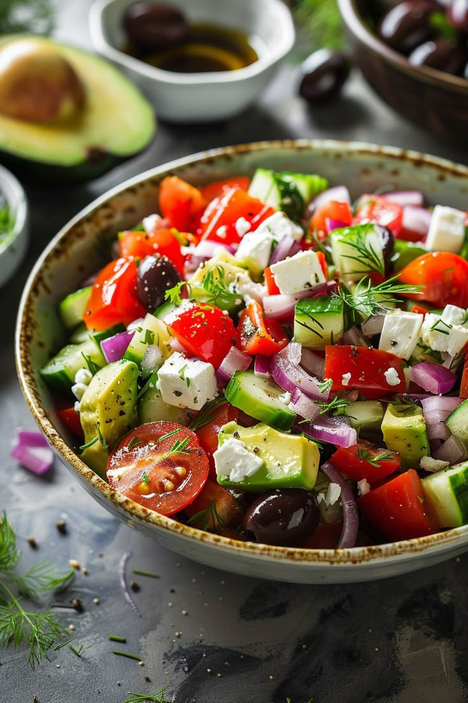

Salad
Ingredients
- Mixed greens
- Cucumber
- Tomatoes
- Carrots
- Red onion
- Bell peppers
- Avocado
- Olive oil
- Balsamic vinegar
- Salt
- Pepper
- Feta cheese
- Nuts (almonds, walnuts, etc.)
- Dried cranberries or raisins
Instructions
- Wash and chop all vegetables.
- In a large bowl, combine mixed greens, cucumber, tomatoes, carrots, red onion, and bell peppers.
- Add avocado slices on top.
- Drizzle with olive oil and balsamic vinegar.
- Add salt and pepper to taste.
- Toss gently to combine.
- Add feta cheese, nuts, and dried cranberries or raisins if desired.
- Serve immediately and enjoy!
Image
